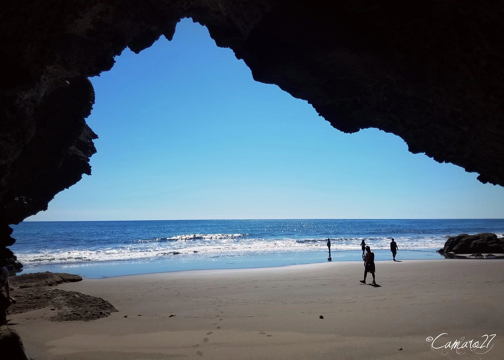
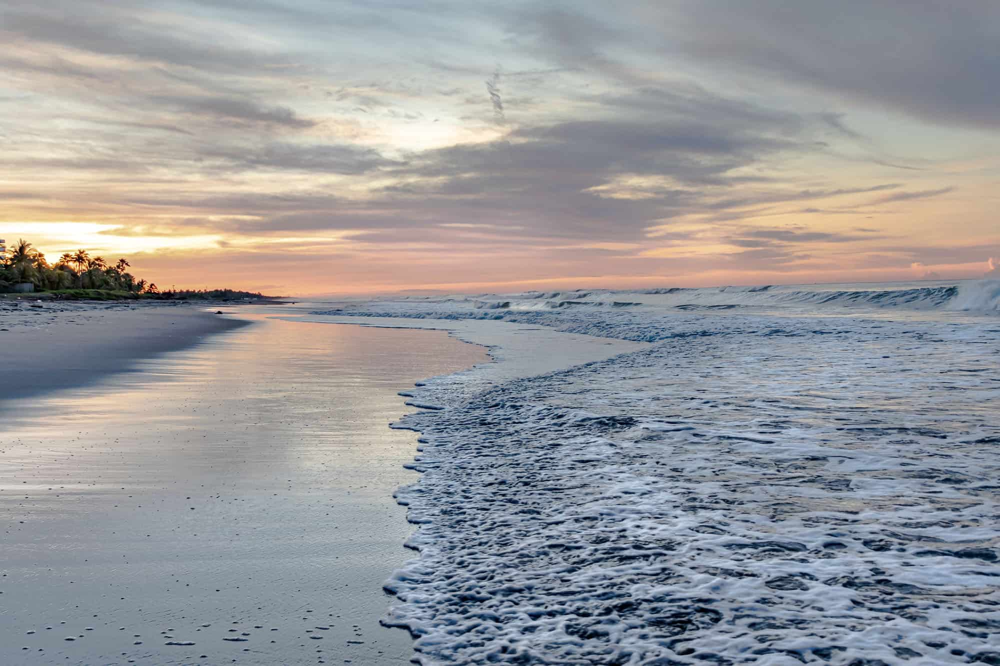
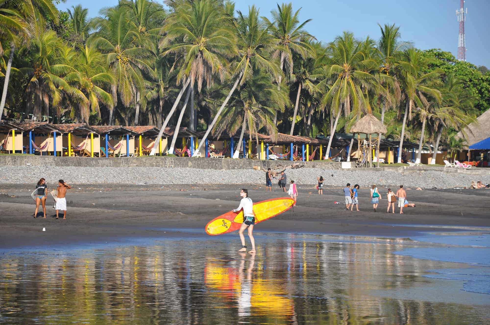
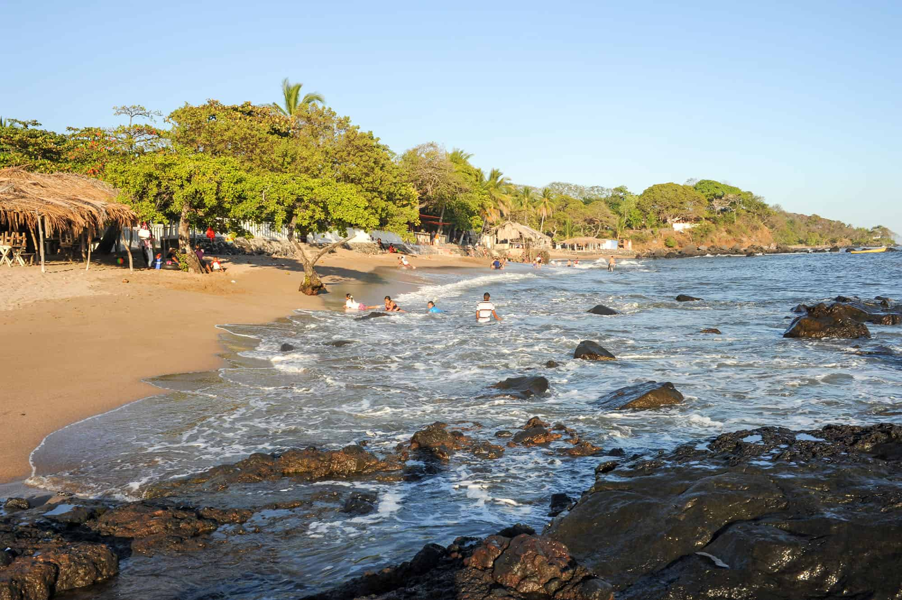

El Zonte (Departamento de La Libertad)
Debes de conocer una de las playas mas hermosas del departamento de la Libertad
Una de las famosas playas de El Salvador situadas en el departamento de La Libertad, compartiendo la calidad de olas de El Tunco y El Sunzal para la práctica de surf, además de sus espectaculares escenarios de cocoteras, acantilados y arenas oscuras. El Zonte también es uno sitio ideal para aprender a practicar surf, contando con varias escuelas y profesores capacitados para enseñar este deporte. El animado ambiente bohemio de la zona, termina por complementar sus atractivos, congregando una amplia oferta de hospedaje, restaurantes y bares.
Consulta la ubicación de: Playa El Zonte
Costa del Sol (Departamento de La Paz)
Una de las playas mas visitas por los Salvadoreños
Conocida como “Paraíso entre dos aguas”, Costa del Sol es una peninsula de 15 kilómetros de arenas grises, rodeada por las aguas del océano Pacífico y el Estero de Jaltepeque. Es una de las playas más turísticas de El Salvador, encontrándose en sus entornos los complejos hoteleros más exclusivos del país. Además de playa, este destino permite descubrir las maravillas naturales del Estero de Jaltepeque, un estuario de pequeñas islas y manglares, donde habita una extraordinaria biodiversidad de aves migratorias. Otra maravilla del paisaje, lo configuran los bancos de arena del estuario, acumulaciones de grava y arena, que se pueden apreciar al bajar la marea.
Consulta la ubicación de: Costa del Sol
Barra de Santiago (Departamento de Ahuachapán)
Entre playa y manglar
Considerada una de las mejores playas de El Salvador para amantes de la naturaleza, se encuentra situada en uno de los bosques de manglares más grandes del país, lugar que da refugio a una invaluable vida silvestre, siendo posible avistar caimanes, cocodrilos y tortugas marinas. 5- A lo largo de sus arenas se extienden numerosos restaurantes donde disfrutar de los productos del mar, mientras que sus aguas mas bien calmas, son ideales para la práctica de deportes acuáticos, como el kayak, el velerismo y el esquí acuático.
Consulta la ubicación de: Playa Barra de Santiago
Las Flores (Departamento de San Miguel)

Una de las maravillas del oriente del país
8- Esta playa se encuentra situada en la zona conocida como el oriente salvaje, en un escenario de grandes formaciones rocosas y bosques de manglares. Cuenta con arenas grises y grandes olas, siendo reconocida como una de las mejores playas de El Salvador para practicar surf. Si se busca un ambiente más animado, se puede visitar la vecina playa El Cuco, una playa más popular y muy frecuentada por los salvadoreños, con buenas olas para practicar surf y numerosos restaurantes donde disfrutar de la comida típica de la región.
Consulta la ubicación de: Playa Las Flores
Playa El Tunco y el Sunzal (Departamento de La Libertad)
Si surfear quieres visitar Playa el Sunsal y El Tunco debes...
En un entorno de acantilados y cocoteras, se encuentra situada playa El Sunzal, una hermosa playa de arenas oscuras y grandes olas, reconocida internacionalmente como uno de los mejores rincones del planeta para la practica de surf junto con Playa El Tunco. Además de surf, esta playa cuenta con hermosos entornos para pasear y zonas de agua calma para practicar snorkeling y buceo de baja profundidad. Frente a la playa, se puede disfrutar de algún platillo típico, en alguno de los tantos restaurantes alineados frente al mar.
Consulta la ubicación de: Playa El Tunco y El Sunzal
Playa Los Cobanos (Sonsonate)
Arena blanca, corales, ballenas y delfines
Considerada una de las mejores playas de El Salvador para la práctica de buceo y snorkeling, contando con varios arrecifes rocosos, que hacen de habitat a una amplia biodiversidad marina. Los mejores meses para la práctica de este deporte son los meses de octubre a febrero. Los Cóbanos, también están entre las playas más bellas del país, con kilómetros de arenas doradas de suave pendiente, en entornos de bosques de cocoteras. Sumado a su belleza escénica, Los Cóbanos, cuentan con el atractivo de su vasta oferta de turismo, con una amplia variedad de hoteles para distintos presupuestos, restaurantes y campos de golf.
Consulta la ubicación de: Playa Los Cóbanos